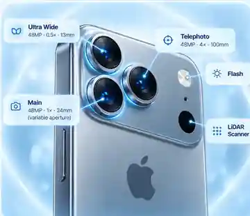

Let’s check your
iPhone cameras.
We’ll inspect image quality, focus and camera features with a simple guided test.

Illustrated iPhone 18 Pro Max reference · camera positions are model-specific, not test results.
Customer-guided visual checks. Safari cannot guarantee independent access to every physical lens.
Let’s prepare
your iPhone.
Safari will ask permission to use the camera. No pictures will be uploaded or stored.
Newer models first. Select a model to include its additional lenses. You can continue without selecting.
Rear picture, focus, image stability, flash and front camera; Face ID where supported.
What will Safari actually test?
This preview cannot identify the exact iPhone model automatically. Native iOS will use verified device information where supported.
Rear camera
Point at a well-lit scene and inspect the picture.
Camera access is requested only when you begin a preview.
Capture and inspect a local sample (optional)
Take a still frame from the current preview. It stays in memory and is discarded when you leave the step; the app never uploads it.
Select anything you observed. This helps a repair technician investigate; it does not prove a faulty part.
Native iOS only. Safari cannot run this authentication check.
Mark what you actually see. A visual pass is not an independent electronic measurement.
Camera diagnostics
complete.
Here's a summary of the checks you completed.
Guided Face ID recognition is separate from the visible selfie camera. No biometric data is captured. A visual test cannot guarantee optical focus calibration, physical lens isolation or the condition of individual TrueDepth components.